The Ellendale Diamond Field
The Ellendale diamond field was discovered in the mid-1970's by the Ashton Joint Venture (AJV - a consortium comprising CRA Exploration (now Rio Tinto), Ashton Mining (now Stornaway Diamonds) and Northern Mining). The AJV carried out evaluation programs during the late 1970's but no decision to mine was made. Kimberley Diamond Company (KDC) gained control of the area in the late 1990's and mined the lamproite pipes of Ellendale 4 and 9 for a number of years. KDC were taken-over by Gem Diamonds, in late 2007, and the mine is now owned by Kimberley Diamonds Limited (KDL, formerly Goodrich Resources). Since 2002, over 2.1 million carats (Mct) of diamonds have been mined from the Ellendale 4 and 9 pipes. KDC also discovered diamondiferous alluvial gravels in old river systems which have been mined locally.
Current resources (30th June 2013) from the KDL web site are shown below.

Introduction
The Ellendale diamond field is located in the northern part of the "West Kimberley Province" about 100 km east of the coastal town of Derby in northern Western Australia (location map).

About 50 lamproite pipes have been discovered to date and additional pipes have been found recently. The pipes are very young in Australian geological history and have been dated at around 21 to 22 million years old (Miocene).
A detailed location map of the kimberlites and lamproites of WA is shown below.
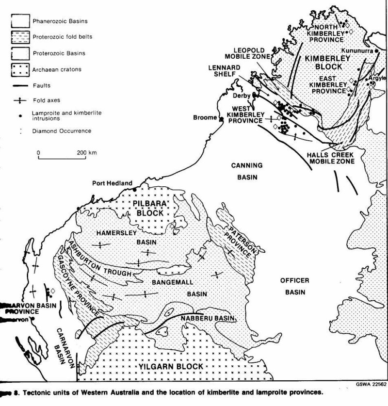Map showing the location of kimberlites and lamproites in WA including Ellendale diamond field (West Kimberley field).
The eruption of these lamproites appears to have been triggered by the Australian tectonic plate colliding with the Asian plate during the Miocene period. The Ellendale diamond field is just south of the Gibb River Road, to the west of the turn-off to the popular tourist spot of Windjana Gorge. Exposures of the geology of these vents are excellent in certain locations, particularly of the volcanic vents of Mount North and 81 Mile Vent (AJV's Ellendale Pipe 5). Photographs of some of the key exposures are shown below. I can supply location and visitor information if anyone is visiting the area and would like to visit these fascinating outcrops. Kimberley Diamond Limited currently hold the tenements.
Geology
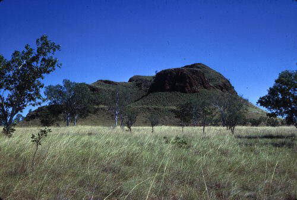Mount North.
The photograph above is of Mount North in the Ellendale lamproite field. The lower third of the hill comprises lamproite pyroclastics with the upper parts being comprised of different varieties of leucite lamproite. Mount North is the most prominent topographic feature in the Ellendale field and is a leucite lamproite, that was described initially in 1940 by Wade and Prider of the University of Western Australia. Farquharson in 1920 was the first to describe the ultrapotassic volcanics of the Fitzroy Valley (which includes the well known lamproite occurrences in the Noonkanbah area). A number of leucite lamproites outcrop in the Ellendale field, but these leucite lamproites do not contain significant amounts of diamonds. Only the olivine-bearing lamproites contain diamonds in economic quantities. This appears to be because these olivine-bearing lamproites are more primitive, having higher MgO (magnesium) content, and are less fractionated than their leucite-bearing relatives. Also the earlier formed pyroclastic facies of the olivine lamproites have the better diamond grades.
A full description of the geology, petrography, mineralogy and geochemistry can be found in Jaques, Lewis and Smith (1986). This publication was published by the Geological Survey of Western Australia as Bulletin 132 "Kimberlites & Lamproites of WA 1986" and can be downloaded free-of-charge from the WA Mines Dept website ("http://www.dmp.wa.gov.au/", Geoscience Publications).
The preservation of the diamonds was assisted by the rapid ascent of the magma to the surface in a magma under high pressure, not allowing time for fractionation, and a limited time during which to dissolve diamonds. The high pressures caused explosive volcanic eruptions at the surface, due to de-gassing, and combined with the interaction with groundwater, produced violent phreatomagmatic eruptions. The rocks at the ground surface are Permian-age sandstones and contain abundant quantities of groundwater. The contact of the hot, volatile-charged, explosive magma with the ground water would have been a very explosive mixture. These eruptions excavated large shallow craters, shaped like a "champagne-glass", and contrasts with the steep-sided carrot shaped vents of the Argyle pipe, and other kimberlitic pipes around the world.
The result of these eruptions were large rounded craters with low rims comprised of excavated country rock sand mixed with chilled magma (juvenile clasts). The hills to the south of Ellendale Pipe 4 are a very good example of the excavated country rock, with the bedding in these hills indicating bedding dipping in towards the vent. Some of these vents comprise multiple vents, for example Ellendale Pipe 4, that have coalesced to form a composite vent.
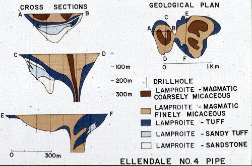Geological plan of the Ellendale 4 lamproite pipe.
After the first phase of violent "vent-excavating" eruptions, the volcanic activity then comprised periods of phreatomagmatic and strombolian style eruptions, which filled the vent with lamproite pyroclastics (tuffs). The earliest formed tuffs contained large amounts of sand from the country rock are called "sandy tuffs" or tuffaceous sandstone. These sandy tuffs typically lie along the base of the crater. Highly vesicular tuffs are present at Ellendale Pipe 16.
The tuffs show abundant evidence of phreatomagmatic activity (similar to the Argyle pipe) with well developed low angle cross bedding and accretionary lapilli. I have attached some images below to illustrate some of these features.
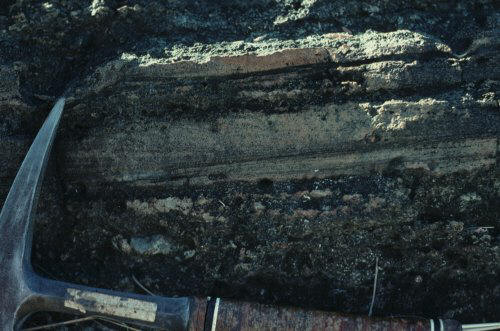Bedded tuffs at Ellendale 5 lamproite pipe.
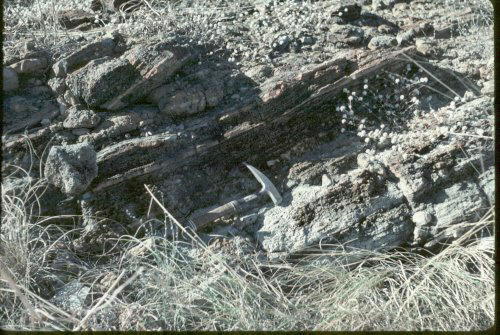Bedded tuffs at the Ellendale 5 lamproite pipe.
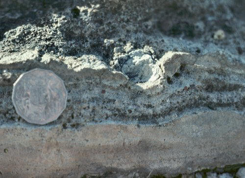Drop stone in bedded tuffs at the Ellendale 5 lamproite pipe.
When the rate of eruptions had decreased, due to the release of pressure caused by the earlier volcanic activity, the vent has filled with lava, forming a lava lake in the centre of the vent. The pyroclastic tuffs are separated from the lava lake (magmatic lamproite) by a contact zone of "autobrecciated lamproite" (also called "transition zone"), caused by the hot molten lava intruding into wet tuffs. The diamond grade of the lava lake material is generally very low and this is interpreted to be due to the diamonds being resorbed by the magma on their "relatively slower" ascent to the surface, and while the magma cooled in the lava lake.
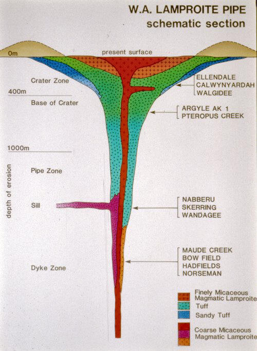The model of a West Australian lamproite pipe is shown above and indicates the relative depths of erosion of some of the kimberlites and lamproites of Western Australia.
Surface Expression of the Lamproites
The olivine lamproites tend to weather more rapidly than the leucite-bearing lamproites and form depressions in the landscape (see photo below).

This photograph is of an olivine lamproite pipe in the Ellendale field. The change in vegetation colour, mainly grasses, is due to the weathering of the pipe being more rapid than the surrounding rocks and the formation of clays, which hold moisture. During the summer "wet season" these are commonly filled with water. These depressions are commonly called "pans".
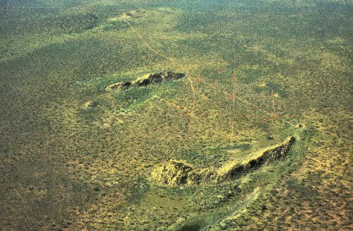Silicified outcrops of Permian Grant Formation sandstone surround some of the lamproite pipes at Ellendale. The best example is at Ellendale 6 where a large olivine lamproite pipe is surrounded on the north and south by prominent quartzite ridges (see photo below).
This lack of outcrop of the olivine lamproites delayed the discovery of these rocks until diamond exploration by the Ashton Joint Venture (AJV) (see below).
Exploration and Discovery of the Ellendale Diamond Field
Prider of the University of Western Australia described the leucite lamproites of the West Kimberley, and indicated a possible genetic link with kimberlites, and therefore diamonds. Diamonds had been found at the nearby Police Camp Pool on the Lennard River, but no one could track down the source of these diamonds. It is interesting that I worked for Techmin in 1974, which was part of the Exoil NL, Transoil NL, Petromin NL group, which recovered these diamonds in the Lennard River in 1967. I was engaged on contract to explore for diamonds in Victoria (Australia) in early 1974. They had flown an aeromagnetic survey of the Ellendale area and had identified most of the magnetic anomalies, now known as the Ellendale Field, but they did not carried-out any field follow-up!
In the mid 1970's, CRA Exploration Pty Limited (now part of Rio Tinto) were part of the Ashton Joint Venture (AJV), and were exploring for diamonds in the northern part of the Kimberley region (see also Atkinson et al 1990 and Smith et al 1990). The AJV had discovered a number of kimberlite pipes and dykes, but none indicating economic grades of diamonds. While this work was going on in the north of the Kimberley, exploration was active all over the Kimberley region. As part of the regional work, an olivine lamproite was discovered at Big Spring, near the Leopold Downs pastoral station homestead in the West Kimberley. Loam sampling over the pipe recovered diamonds! This was the first diamondiferous olivine lamproite recognised in the region. The Ellendale lamproite field was known for its leucite lamproites and the recovery of a pyrope garnet in Mount North Creek in 1976 led to follow-up work and the discovery of the diamondiferous Ellendale Pipe 4. An airborne magnetic ("aeromagnetic") survey was flown over the area and numerous additional leucite and olivine lamproite pipes were quickly discovered.
The Ellendale lamproite field is part of the West Kimberley Lamproite Province, which also includes the Calwynyardah and Noonkanbah fields to the south of the Ellendale Field. I worked on both of these areas during the 1970s' and hope to add more detailed information on these areas to these pages in the future.
The discovery of the Ellendale diamond field also indicated the importance of chromite as an indicator mineral for lamproite and the use of aeromagnetics in the location of pipes.
Evaluation of the Ellendale Pipes
The AJV had discovered that the West Kimberley lamproites were diamondiferous and had pegged tenements over the majority of the lamproites in the region. It was clear that the Ellendale field contained the best diamond grades and an extensive evaluation program was begun in this area in 1977. Bulk sampling for diamond grade was also being carried out in the Calwynyardah and Noonkanbah areas by the AJV during 1979. I was heavily involved with this work and hope to bring some more information to these pages on this work in the future.
The 1977-1980 Evaluation Program
The AJV and Rio Tinto carried out evaluation programs at Ellendale in the period 1977 - 1980 and again in 1990. Kimberley Diamond Company entered into a purchase agreement for the tenements from Rio Tinto in 2001 and carried out evaluation and mining of Ellendale pipes 4 and 9. They also identified higher grades in the surface enrichment zones of Pipes 4 and 9, and discovered a number of new lamproite occurrences.
The lamproite pipes were initially located by the use of an aeromagnetic survey to identify magnetic targets, which were then more closely examined by ground magnetic surveys. Auger and/or air core drilling was carried out to test each of the magnetic targets for the presence of lamproite. Scout bulk sampling was then carried out to test the pipes for their diamond content and hence, prioritise pipes that required more detailed evaluation by bulk sampling.
Air core drilling was also carried out to determine the shape and internal structure of the higher-grade olivine lamproite pipes. The initial evaluation program undertaken by the AJV comprised the processing of bulk samples through a 25 tonne per hour (tph) heavy medium separation plant (HMS). The bulk samples were collected from trenches for near-surface grades and from 0.9 m diameter drill holes for grade at depth. Shallow drill sampling was carried out using the Hughes Auger that could sample down to 30 m, and the Wirth drill collected samples to a depth of about 200 m.
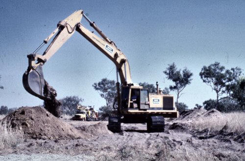Trenching.
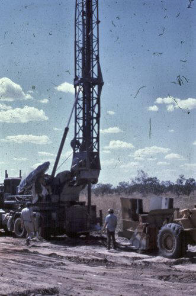Hughes Auger drilling in 1980 by the AJV.
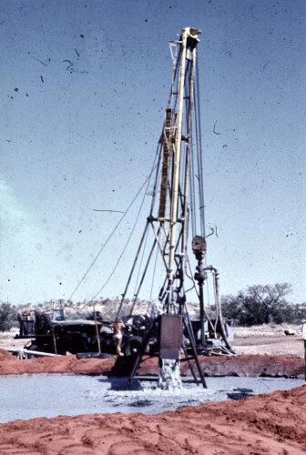Wirth drilling rig in 1980 by the AJV.
Diamond sorting was carried out at site. As the area is remote from any public services, roads and an airstrip had to be built in the area. Power was generated at the plant site for all facilities. A camp was established for the field staff. A borefield was constructed to supply water for operations.
The diamonds at Ellendale are of good quality with a gem content of about 60%. Parcels of diamonds were valued in 1980 from pipes 4 and 9, and yielded prices of US$67 and US$96 per carat. These diamonds today fetch very much higher prices due to the content of the beautiful yellow diamonds. Hall and Smith (1984) describe the diamonds as predominantly good quality yellow, well-shaped, smooth and shiny-surfaced, rounded dodecahedral stones. More information on the current value of these diamonds can be found on the KDL website (http://www.kdc.com.au/).